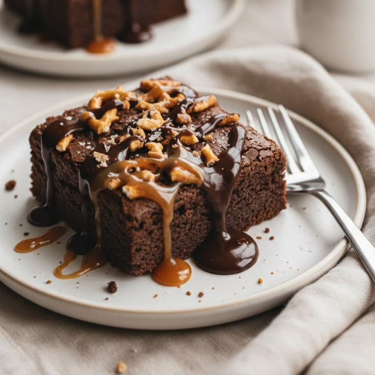

Aprenda a fazer um brownie de chocolate intenso, com casquinha crocante por cima e interior super macio e chocolatudo. Essa receita é perfeita para quem ama doces com muito sabor e textura irresistível. Fácil de preparar e feita com ingredientes simples, ela combina perfeitamente com sorvete, frutas ou até mesmo pura. Ideal para qualquer ocasião, esse brownie vai conquistar todos os amantes de chocolate logo na primeira mordida.

Fácil
40min
Projeto para fins
acadêmicos, feito
com amor pela aluna
Lívia Faccin
Copyright © 2026 Sweet Bytes